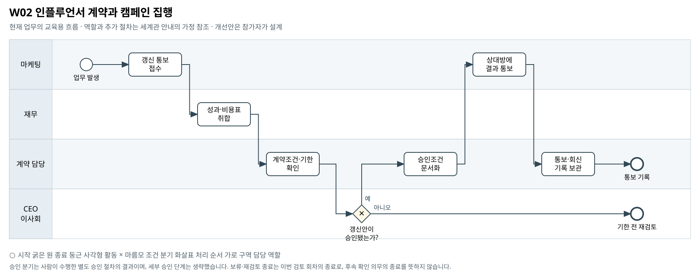

인플루언서 계약과 캠페인 집행
실적 보고, 캠페인 확대 기안, 연간 계약의 갱신 통보가 따로 움직일 때 무엇을 먼저 연결해야 하는가?
BPMN 2.0 편집 원본 · 도식 크게 보기 · 8개 도식집 PDF


승인 분기는 사람이 수행한 별도 승인 절차의 결과이며, 세부 승인 단계는 생략했습니다. 보류·재검토 종료는 이번 검토 회차의 종료로, 후속 확인 의무의 종료를 뜻하지 않습니다.
기존 자료의 단초
- INF-001 전속계약은 고정 피 연 28억원이며 2026-07-17까지 통보하지 않으면 동일 조건으로 1년 자동 갱신되는 것으로 제시돼 있다.
- 캠페인 확대 기안과 연간 전속계약은 별개 결정이다. 개별 기안을 부결해도 전속계약의 자동 갱신을 막지는 못한다.
- 연간 전속계약 10억원 초과의 체결·갱신은 CEO/이사회 권한이며 미통보 자동 갱신도 체결로 본다.
- 캠페인 실적은 대표 표본이다. 표본 성과를 연간 고정 피와 곱해 전사 손익으로 단정할 수 없다.
주최 측의 교육용 업무 가정
- [교육용 가정] 기존 자료의 마케팅·재무 검토와 그룹 승인 절차를 계약 담당의 수작업 접수·조건확인·통보 기록으로 단순화한다.
- [교육용 가정] 도식은 통보 기한 전에 상신한 갱신안의 승인 여부를 다룬다. '아니오' 종료는 재검토 상태이며 계약 미갱신 확정을 뜻하지 않는다.
- [범위] 법무·계약 담당의 독립 부서 존재와 상세 서명 절차는 원본에서 확정되지 않았다. 여기 나열한 보완 항목은 선택 예시다. 필수 확장과 다른 부서 영향의 기준은 A01을 따른다.
미해결 지점
- 계약 원문, 성과 피 정산조건, 실제 통보 수령 증빙이 없다.
- 연간 계약과 캠페인별 비용의 귀속·중복 여부를 대사할 상세 자료가 없다.
- 담당자별 검토·상신·결정·통보 이력이 없어 실제 지연 원인은 확정할 수 없다.
확장할 때 생각할 질문
- 갱신과 개별 집행 중 어떤 결정의 누락을 문제로 정의할 것인가?
- 성과 표본으로 판단할 수 있는 범위와 추가로 필요한 증거는 무엇인가?
- 보류 상태에서 통보 기한이 도래하면 누가 어떤 후속 확인을 해야 하는가?
보완할 수 있는 데이터
- 계약 원문 발췌와 변경 제안서
- 상신·승인·통보·수령확인 이력
- 고정 피·성과 피·캠페인 비용 연결표
관련 원본 자료
- 00_common/Business_Process_Map.md
- 00_common/data_dictionary.md
- 00_common/approval_authority_policy.md
- 00_common/mkt_meeting_notes_ms.md
- 02_masil/marketing/inf001_exclusive_contract_notice.md
- 02_masil/marketing/mkt_budget_plan_ms.csv
- 02_masil/marketing/mkt_ad_spend_ms.csv
- 02_masil/marketing/mkt_returns_ms.csv
- 02_masil/marketing/mkt_cost_master_ms.csv
그림의 관계가 원본 파일의 모든 연결키 제공을 뜻하지는 않습니다. 원본에서 확인한 관계와 추가한 매핑·가정을 구분하십시오.